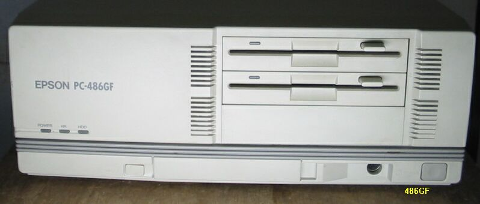
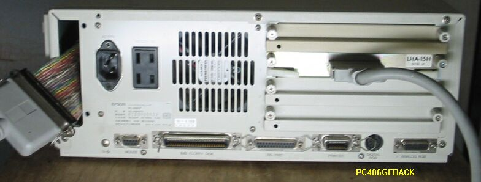

PC486GF5
PC486GF5の主な仕様

・CPU;i486SX16MHz 1386DX10/5MHz相当に切り替え可能
・RAM;1.6MB max14.6MB
・FDD;1M/640Kバイト両用タイプの5インチFDD２基内蔵
・HDD;3.5インチSCSIタイプHDD１基内蔵可能
・外部拡張スロット;4 PC98用互換ボード装着可能

裏側を見ると、このマシンの内蔵HDDが手に入らなかったため、拡張スロット のSCSIボードからケーブルをのばし、あり合わせのSCSI-HDDに接続している様子が
わかります。純正品が故障してしまった場合など、このようにして間に合わすことが
できますね。
（2003/05/05 記）
EPSON-PC98互換機のページに戻る